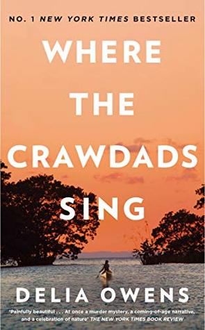
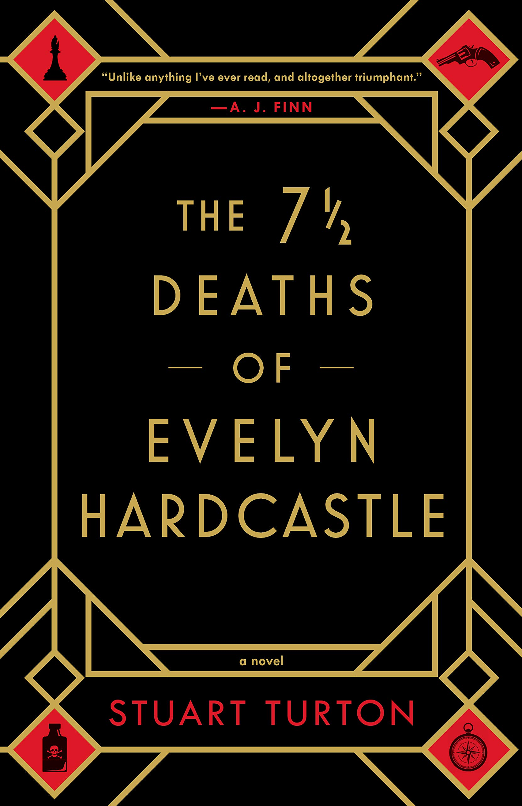
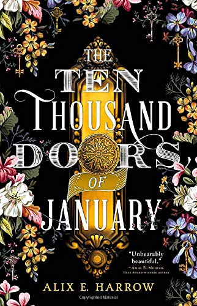
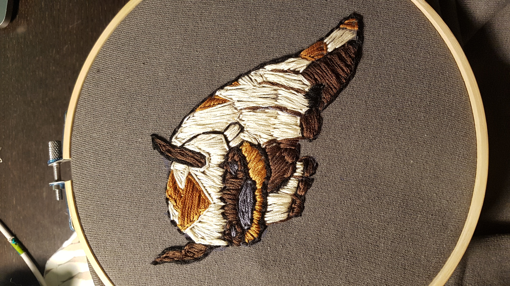
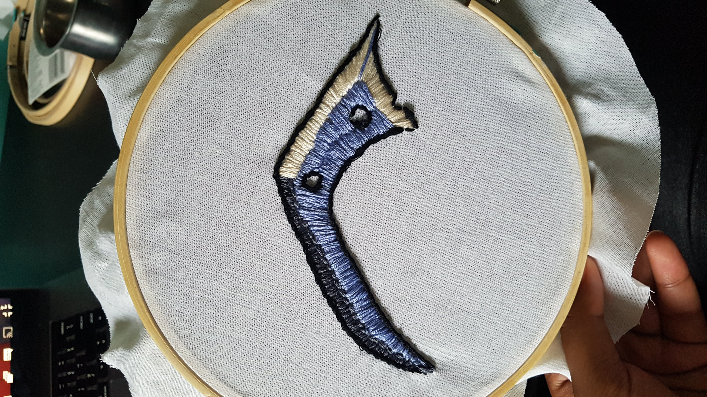
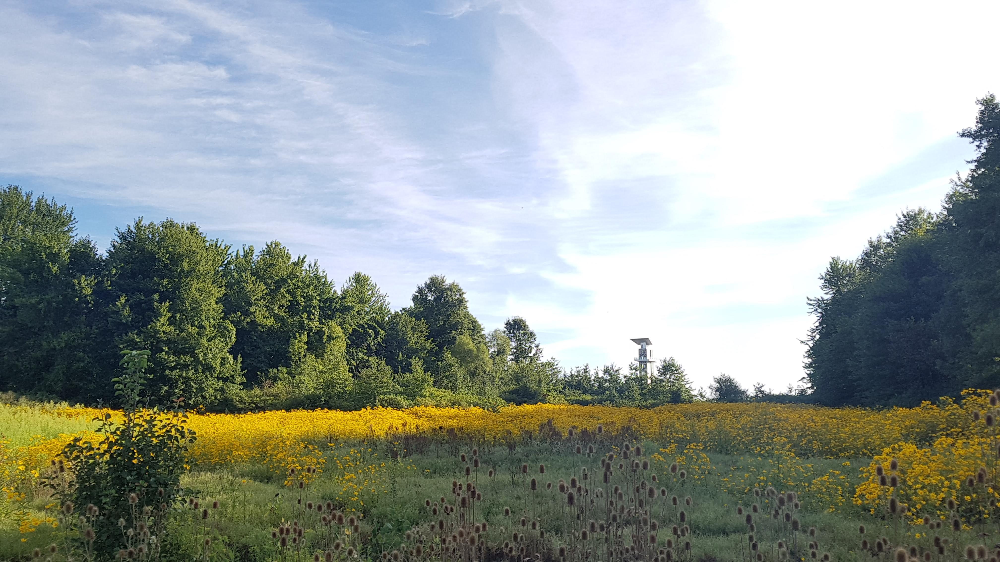

I was able to read quite a few books this summer. I condensed my reading list into 4 personal favorites down below:
|  |  |
|  |
Honorable Mentions include:
I thought it would be fun to try embroidering some characters from A:TLA since I was rewatching it at the time. I ended up using a mixture of split stiches and back stitches for the outlines, and I used a satin stitch to fill in the inside shape blocks. One important thing I learned was to be aware of my thread thickness, especially if I want to vary the texture and look. I used the thread as is for both of these pieces (6-strand), which worked for the bison because he is supposed to be a more textured and fluffy animal. However, for my other projects, I started experimenting with thinner threads (3-strand) which looks much smoother.
|  |  |
This park in particular has a lot of conservation sites with information cards about the tyes of plants and structures that they built. It has a lot of nice pathways and greenery to look at while running, and the sunrises are not too bad either :)
